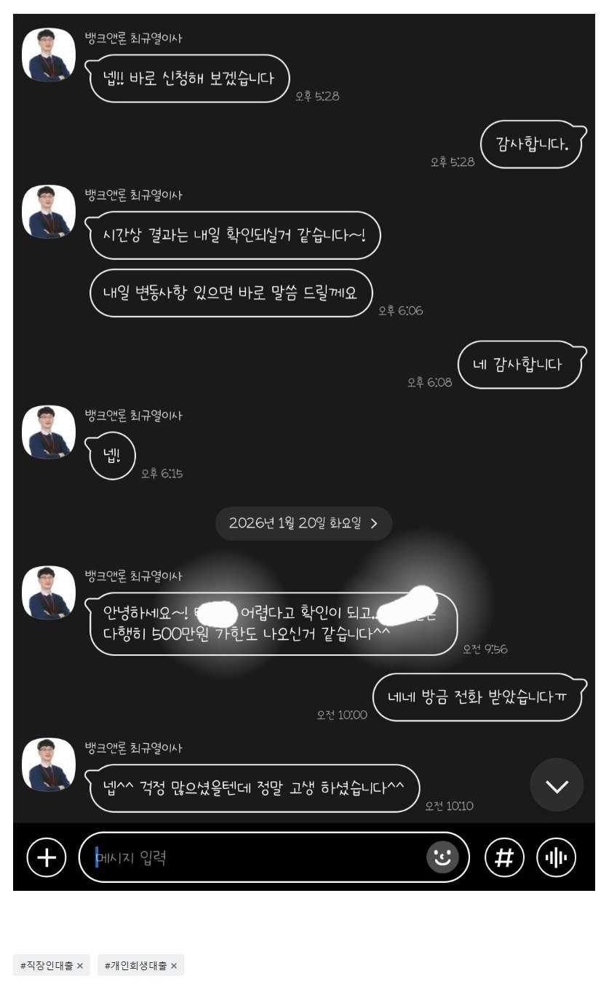

[개인회생자대출 ] 육아 단축근무로 급여가 적은상황에서의 개인회생자 대출 승인. 도움주셔서 감사합니다.
대출조건
재직형태: 직장인
재직기간: 3년이상 /4대보험O
연소득: 2000이하
신용등급: 최하
서류 : 건강보험 득실확인서, 신분증, 초본, 납부확인서, 3개월월급내역, 개인회생사건번호, 채권자목록 등
후기
급한 불 끄느라 후기가 늦었습니다.
개인회생이후 1400만원 기대출에 육아 단축근무로 급여가 적어서 대출이 안될 수 있어서 망설였는데 적극적으로 알아봐주셔서 500만원추가 대출 할 수 있었습니다.
자세한 설명과 꼼꼼하게 알아봐주셔서 다시 한번 감사합니다.

https://cafe.naver.com/cityman88/310077